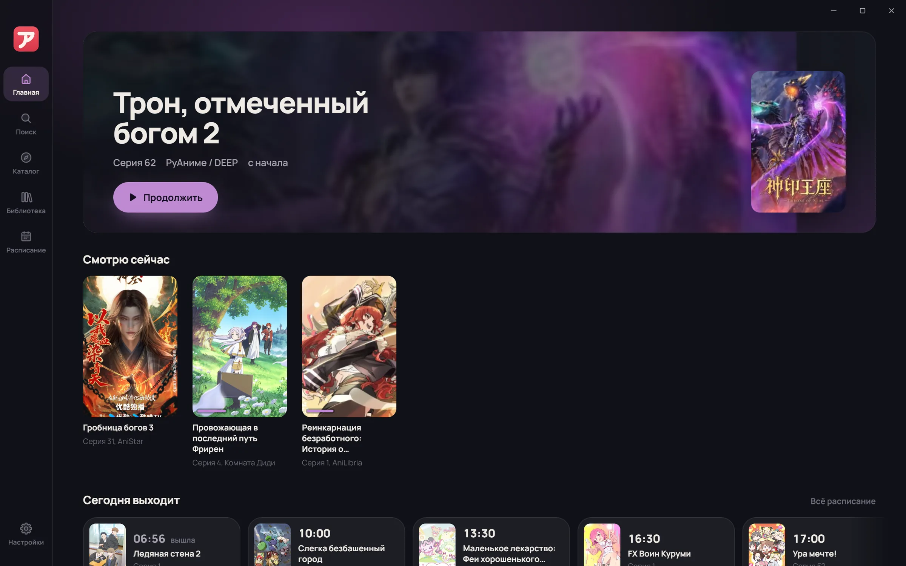
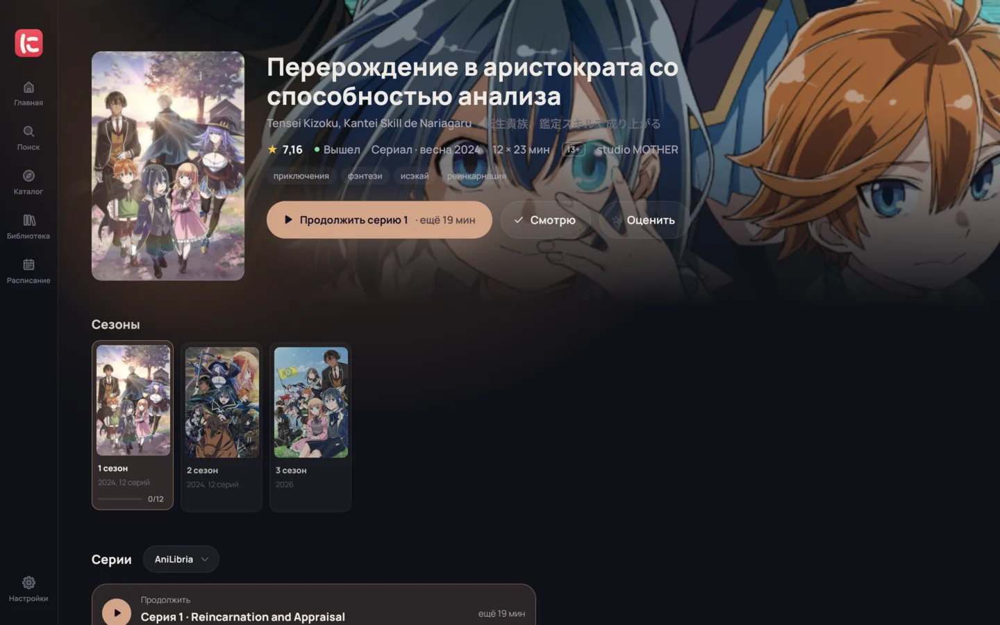
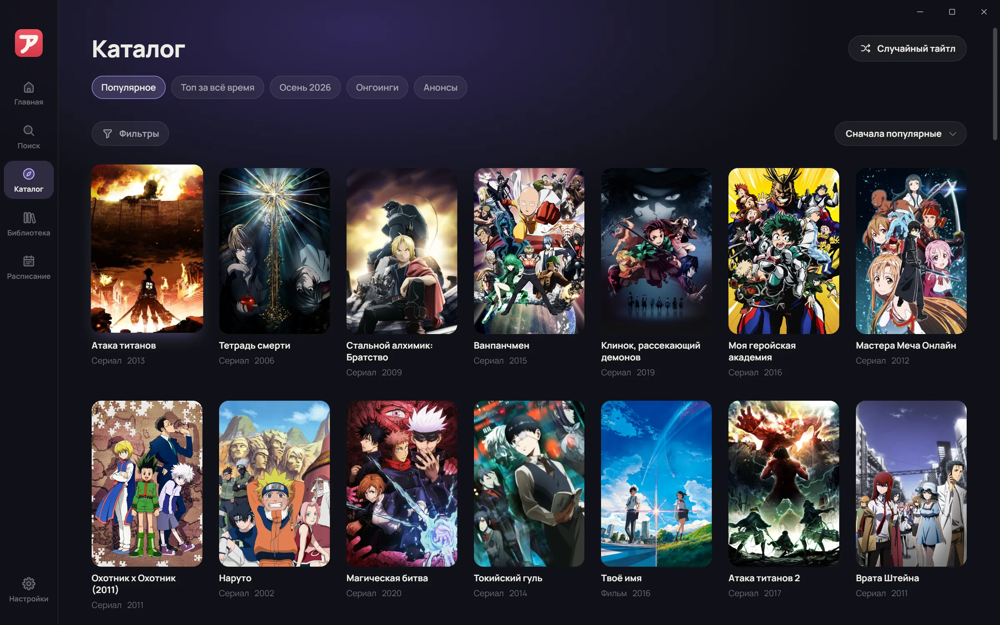
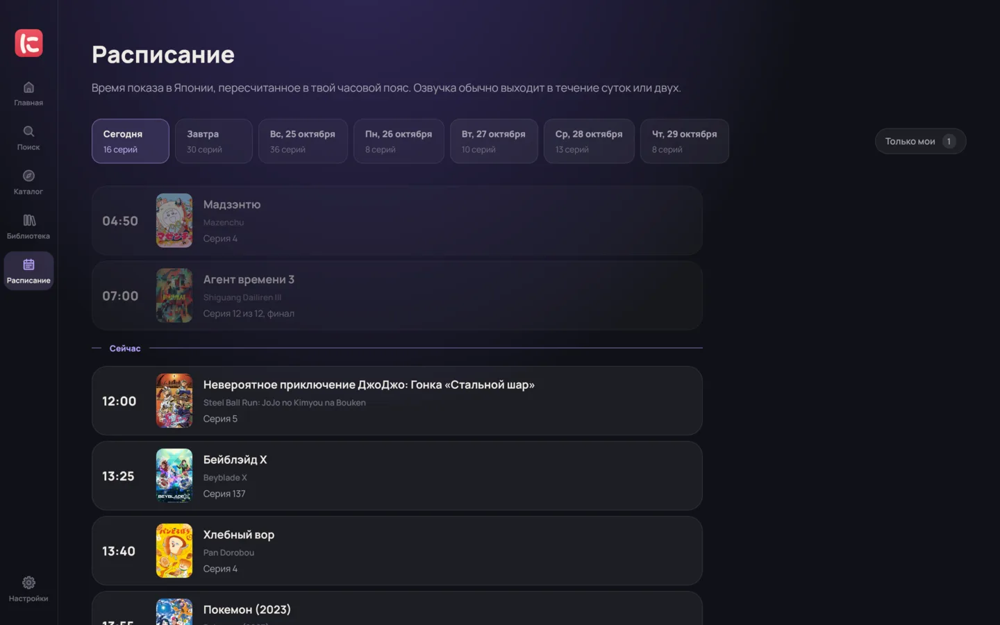

Аниме из всех озвучек в одном окне
ninari собирает серии с разных сайтов, показывает каждую озвучку с её лучшим качеством и помнит, на какой минуте ты остановился. Каталог Shikimori, плеер mpv с апскейлом Anime4K и уведомления о новых сериях.
Windows 10 и 11, 64 бита. Обновляется само.

Одна серия, все озвучки
Открываешь тайтл, и приложение спрашивает каждый подключённый источник. У «Фрирен» таких озвучек 39. Одна и та же команда на разных сайтах собирается в одну строку, а качество видно сразу. Смотреть приложение начнёт с лучшего: если серия есть и в 720p, и в 1080p, включится 1080p.
- Комната Диди2160p28 из 28
- Amazing Dubbing1080p28 из 28
- AniBaza1080p28 из 28
- AniDUB1080p28 из 28
- AniLibria1080p28 из 28
- и ещё 34 озвучки

Плеер, который делает картинку лучше
Внутри mpv, тот же движок, что любят за качество. Остальное собрано под аниме.
- Апскейл Anime4K. Включается сам, когда видео меньше экрана: 720p на мониторе 1080p или 4K. Два режима, для встроенной и для дискретной видеокарты.
- Звук. Выравнивание громкости, разборчивые голоса, ночной режим, шумоподавление и объём для наушников. Каждое включается отдельно.
- Без лишнего. Пропуск опенинга и эндинга, скорость, превью при перемотке, следующая серия сама.
Есть что посмотреть
- Каталог Shikimori. Жанры, в том числе «без этого жанра», студии, годы и архив сезонов.
- Подборки и случайный тайтл. Когда не знаешь, что включить.
- Похожее и рекомендации. По тому, что ты смотришь и досмотрел.
- Всё о тайтле. Сезоны франшизы по порядку, трейлеры, опенинги, персонажи и актёры озвучки.

Ничего не теряется
- Прогресс. «Продолжить» открывает ту же минуту той же серии в той же озвучке.
- Новые серии. Раз в полчаса приложение проверяет онгоинги и сообщает, когда серия вышла хоть в какой-нибудь озвучке. Продолжения досмотренного тоже не пропустишь.
- Список с Shikimori. Перенеси свой открытый список по никнейму вместе со статусами и просмотренными сериями.
- Расписание. Что выходит сегодня и на неделе, по твоему времени. Можно оставить только свои тайтлы.

Как начать
-
Установи
Скачай установщик, он не просит прав администратора. Дальше приложение обновляется само.
-
Подключи источники
При первом запуске одна кнопка подключает все плагины из каталога. Список можно перенести с Shikimori там же.
-
Смотри
Найди тайтл, выбери озвучку, и он появится на главной с кнопкой «Продолжить».
Откуда берутся серии
ninari не хранит и не раздаёт видео. Серии находят плагины, которые ты подключаешь сам: AniLibria, Animego, AnimeLib, Anixart, Rutube, Shikicinema, YummyAnime. Каждый плагин работает в песочнице и ходит только на свои сайты, а если какой-то источник сломался, приложение покажет это в настройках и возьмёт серию из другого.
Вопросы
Нужен ли аккаунт?
Нет. Библиотека, прогресс и настройки хранятся на твоём компьютере. Копию библиотеки можно сохранить в файл в настройках.
Какая нужна видеокарта?
Для обычного просмотра любая. Апскейл в режиме Fast идёт и на встроенной графике, режиму HQ нужна дискретная уровня GTX 1660 или выше.
Работает ли на macOS, Linux или телефоне?
Пока только Windows 10 и 11.
Почему у тайтла нет нужной озвучки?
Значит, её нет ни в одном подключённом источнике. Если источник нашёл не тот тайтл, на странице тайтла можно выбрать правильный вручную.